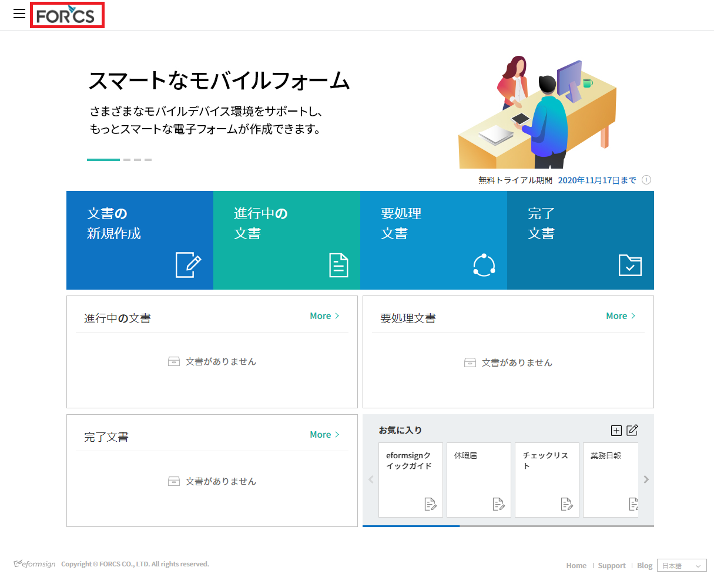
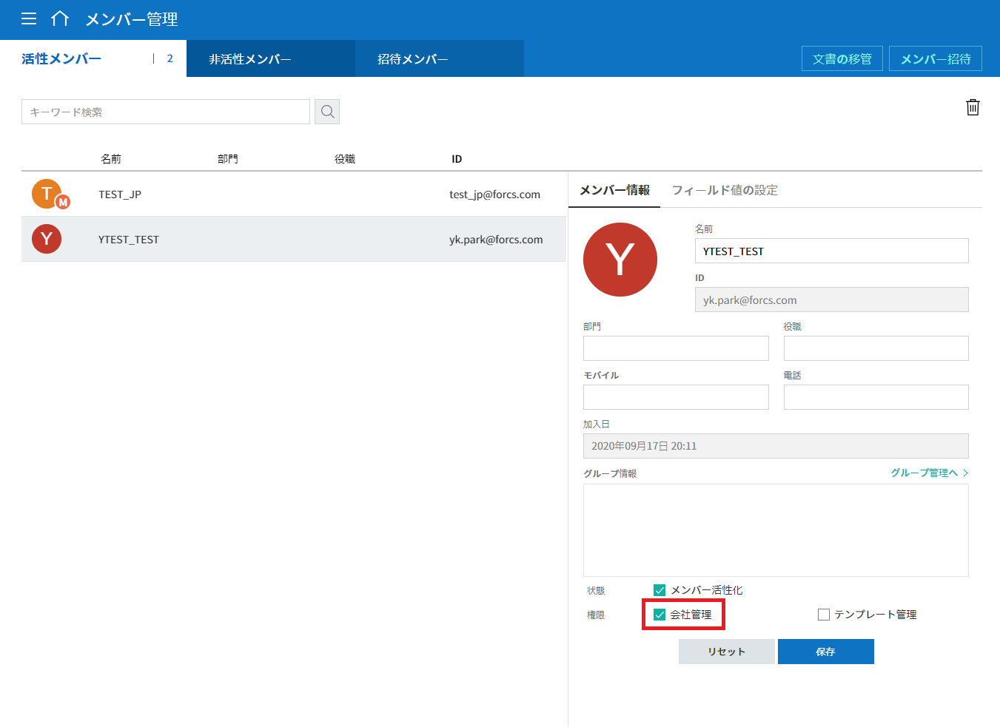
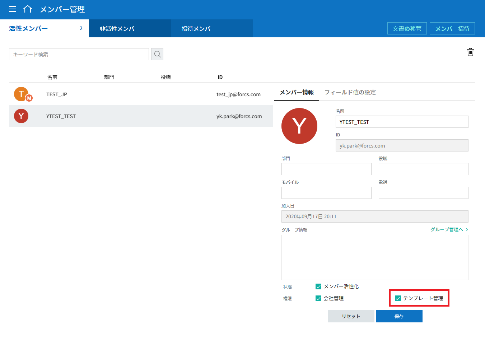
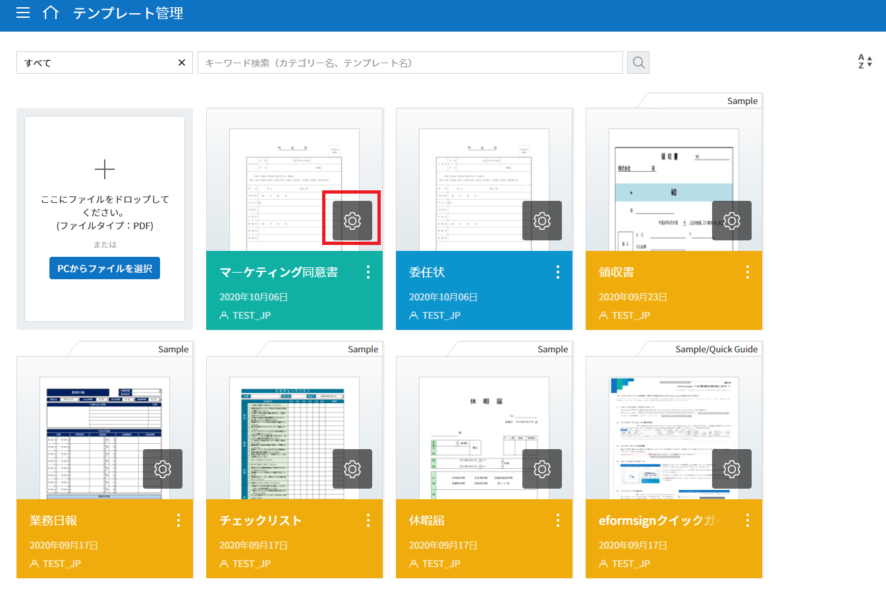
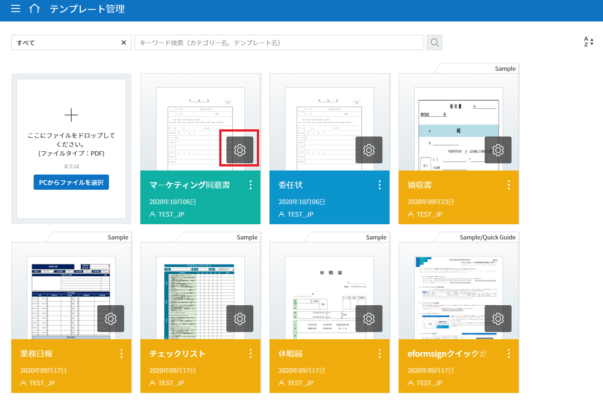
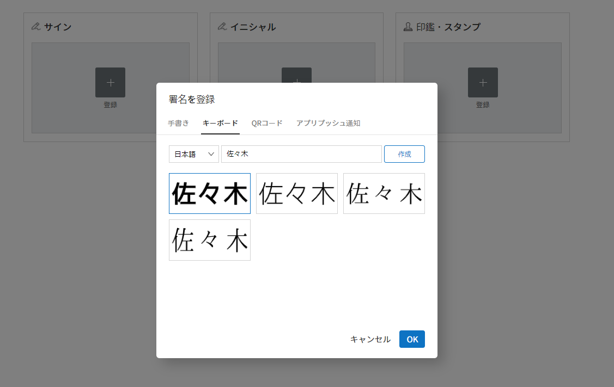

基本情報¶
ダッシュボード¶
メニューの構成¶
eformsign にログインした後、ダッシュボード ダッシュボード
画面の左上のメニュー ( )
をクリックすれば、次のようなサイドバーメニューが表示されます。各メニューは、ユーザーの権限によって異なって表示される場合があります。代表管理者には、すべてのメニューが表示され、代表管理者がすべての権限を持ちます。
)
をクリックすれば、次のようなサイドバーメニューが表示されます。各メニューは、ユーザーの権限によって異なって表示される場合があります。代表管理者には、すべてのメニューが表示され、代表管理者がすべての権限を持ちます。
{kind=link}
eformsignのメニューの構成
各メニューは次のとおりです。
- 文書の新規作成： 文書の新規作成 文書を作成可能なテンプレートのリストが表示されます。リストからテンプレートを選択して文書を作成します。
- 文書トレイ： 文書トレイ
文書の状態によって文書のリストを表示します。
- 進行中の文書： 進行中の文書 作成または処理済みで、完了はしていない文書のリストを表示します。
- 要処理文書： 要処理文書 下書きとして保存した文書や、他のメンバーが作成または決裁を依頼した文書のリストを表示します。
- 完了文書： 完了文書 自分が作成または処理済みの文書のうち、完了文書のリストを表示します。
- 文書管理： 文書管理 このメニューには、文書の管理権限がある場合にのみアクセスできます。文書の管理権限を持っている文書については、すべて表示します。ただし、代表管理者の場合は、すべての文書を確認および管理できます。
- マイ署名： マイ署名 マイ署名を登録し、文書の作成時に便利に署名欄に適用することができます。
- テンプレート管理： テンプレート管理 このメニューには、テンプレート管理の権限がある場合にのみアクセスできます。テンプレートのリストを確認でき、テンプレートを設定できます。
- 会社管理： 会社管理
このメニューには、会社の代表管理者のみがアクセスできます。会社情報を照会し、情報を変更できます。
- 会社情報： 会社情報 会社情報を確認することができます。
- グループ管理： グループ管理 メンバーのグループを作成でき、グループ情報を変更できます。
- メンバー管理： メンバー管理 メンバーを追加し、メンバー情報を修正できます。
- カスタムフィールド管理： カスタムフィールド管理 会社、グループ、またはメンバーに関する追加情報を入力または変更できます。
- 通知テンプレート管理： 通知テンプレート管理 eformsign から送信されるメールおよび SMS の通知テンプレートのリストを確認および変更できます。
- 署名の設定： 署名の設定 文書の署名欄に直接署名するときに使用可能な署名方法が選択できます。
- コネクト： コネクト
このメニューには、代表管理者のみがアクセスできます。外部サービスと連動して使用する機能を確認することができます。
- クラウドストレージ： クラウドストレージ Dropbox、Google ドライブ、Box のアカウントに接続して、完了文書を保存します。
- 分析およびレポート： 分析およびレポート 文書に入力されたデータを Google スプレッドシートと Office 365 Excel に自動保存するように設定することができます。
- API / Webhook: API Webhook eformsign API を使用する際に必要な API と Webhook キーを管理できます。
- 料金管理： 料金プランと決済履歴を照会し、料金プランや決済手段を変更できます。
- 利用状況： 毎週、毎月、および年間の利用状況を表示します。
- フォームビルダーをダウンロード： フォームビルダーをダウンロード Microsoft Office で電子フォーム (テンプレート) を作成時に必要なフォームビルダーをダウンロードします。
ダッシュボード画面の構成¶
ダッシュボード eformsign にログインすれば、ダッシュボード画面が表示されます。処理が必要な文書や進行中の文書などをリスト表示しており、文書の新規作成 などのメインメニューへのショートカットを提供します。
{kind=link}
ダッシュボード画面
- ① 文書の新規作成
- 文書の新規作成 保存したテンプレートを使用して、文書を新規作成できる 文書の新規作成 画面に移動します。
- ② 進行中の文書
- 進行中の文書 現在進行中の文書の数が表示され、クリックすると、 進行中の文書のリストが確認できる 進行中の文書 に移動します。
- ③ 要処理文書
- 要処理文書 処理する必要のある文書の数を表示します。クリックすると 要処理文書 に移動します。
- ④ 完了文書
- 完了文書 完了文書を確認できる 完了文書 に移動します。
- ⑤ 進行中の文書
- 進行中の文書の数と、最新の3つの文書のリストを表示します。リスト内の文書名をクリックすると、その文書に直接移動します。そして、More をクリックすると、 進行中の文書 に移動します。
- ⑥ 要処理文書
- 処理する必要のある文書の数と、最新の3つの文書のリストを表示します。リスト内の文書名をクリックすると、その文書に直接移動します。そして、More をクリックすると、 要処理文書 に移動します。
- ⑦ 完了文書
- 完了文書の最新の3つの文書のリストを表示します。リスト内の文書名をクリックすると、その文書に直接移動します。そして、More をクリックすると、 完了文書 に移動します。
- ⑧ お気に入り
- お気に入り
お気に入りに登録したテンプレートを表示します。テンプレートをクリックすると、「文書の新規作成」画面に直接移動し、そのテンプレートで文書を新規作成できます。テンプレートをお気に入りに追加するには、追加アイコン
()
をクリックして新規登録します。お気に入りに登録したテンプレートを削除するには、編集アイコン
(
 ) をクリックして削除します。
) をクリックして削除します。
{kind=link}
{kind=link}
基本情報の表示と変更¶
マイ情報 eformsign
に会員登録する時に入力した個人情報や登録会社を確認するには、サイドバーメニューの右上のアイコン（ )
をクリックして確認します。
)
をクリックして確認します。
{kind=link}
マイ情報を含むメニューアイコン
メニューツリーの右上のアイコン ( )
をクリックすると、サブメニューが次のように表示されます。
)
をクリックすると、サブメニューが次のように表示されます。
{kind=link}
マイ情報の表示および変更メニュー
- 会社の変更： 会社の変更 eformsign に登録している複数の会社がある場合は、「会社の変更」をクリックして会社の一覧を表示し、変更したい会社をクリックして会社を変更できます。
- マイ情報： マイ情報 eformsign に会員登録するときに入力した個人情報を確認および変更し、所属会社の情報を確認することができます。
- ログアウト： ログアウト eformsign からログアウトできます。
マイ情報¶
マイ情報 > 個人情報
{kind=link}
マイ情報 > 個人情報画面
- 個人情報
- 会員登録時に入力した名前、メールまたはID、パスワード、連絡先の詳細を表示および編集できます。
- SNSアカウントで接続
- SNS アカウントは、Google や Facebook のアカウントを使用して接続、追加、接続解除できます。
- お知らせ
- 「マーケティング情報の受信」を確認し、「同意する」または「同意しない」を選択できます。
- eformsignから脱退
- eformsign から会員脱退をしようとする場合は、画面の下部の eformsign から脱退＞ をクリックして、会員を脱退できます。
マイ情報 > 会社情報
{kind=link}
マイ情報 > 会社情報画面
- 基本情報
- 会社名、国、言語、連絡先などの基本情報を確認することができます。
- 詳細情報
会社の住所、事業者登録番号、ホームページのURL、代表管理者の名前とメールアドレスを確認することができます。
注釈
マイ情報では、会社情報を確認することのみ可能で、会社関連情報の修正については、 会社管理 > 会社情報 メニューで行います。会社情報の修正は、代表管理者または会社管理の権限を有するメンバーのみが実行できます。
- この会社を脱退する
会社を脱退したい場合は、画面下部の この会社脱退する をクリックして脱退できます。この会社脱退する をクリックすると、所属している会社のリストが表示され、そのリストから脱退したい会社を選択して撤退を行うことができます。
重要
一般メンバーの場合、所属会社を退社する場合、個人のアカウントは保持され、別の会社に入会したり、新しい会社を作成したりすることができます。
代表管理者の場合は、脱退時に会社が削除されます。会社を削除せずに会社を脱退したい場合は、代理管理者を別の人に委任した後、会社を脱退する必要があります。
会社情報の修正および追加¶
マイ情報 で確認可能な会社情報については、 会社管理 > 会社情報 で修正できます。 会社情報
注釈
この作業は 代表管理者 または 会社管理の権限 が必要です。
{kind=link}
会社管理 > 会社情報メニュー
登録会社の情報を修正する方法
- サイドバーのメニューで 会社管理 > 会社情報 に移動します。
- 会社情報 > 基本情報 画面上で修正したい情報を変更します。
- 修正が完了したら、各領域の下部の 保存 ボタンをクリックします。
{kind=link}
会社情報画面
ブランド¶
ブランド 会社のロゴやシンボルを登録して、eformsign のダッシュボードやサイドバーメニューに表示することができ、文書を依頼するときなどに送信するメールのテンプレートに表示することもできます。
注釈
ロゴとシンボルの違い
ロゴもシンボルも会社を代表するイメージです。ロゴは通常、ブランド名を書いている縦長の形であり、シンボルは画像のみで表した正方形の形です。
eformsign は、ロゴには 512 x 128 の縦の画像を、シンボルには 120 x 120 の正方形の画像を使用することを推奨します。
会社のロゴを登録する方法
{kind=link}
会社情報 > ブランドイメージの登録
サイドバーのメニューで 会社管理 > 会社情報 に移動します。
ブランド タブを選択します。
ブランドイメージ > ロゴ 領域の画像をクリックします。
画像アップロードのポップアップが表示されたら、PC に保存されているロゴの画像ファイルを選択してアップロードします。
- 画像サイズ：幅 512 px、縦 128 px を推奨
- ファイルサイズ：最大 300 KB
- ファイル形式：PNG、JPG、JPEG、GIF
画面右上の「保存」ボタンをクリックします。
ダッシュボードで変更されたロゴを確認します。
ロゴが変更されたダッシュボード
{kind=link}
権限の区分¶
eformsign はメンバーに権限を付与することができ、合計5つのレベルで権限別の管理ができます。各ユーザーの権限は、次のように区分できます。
代表管理者
代表者管理者の権限 会社の代表者は、eformsign の使用を完全に制御できる権限を持ちます。
会社管理
会社管理 会社管理の権限 メニューにアクセスできます。会社情報、メンバー、グループなどを管理でき、メンバー管理 では権限を設定できます。
テンプレート管理
テンプレート管理 テンプレート管理の権限 メニューにアクセスできます。フォームビルダーを使用して、フォームファイルを作成したり、Web フォームデザイナーでファイルをアップロードして新しいテンプレートを登録したりすることができます。テンプレートを修正、配布、および削除できます。
文書の管理
文書の管理 文書の管理権限 メニューにアクセスして、テンプレート別に作成された文書を表示およびダウンロードできます。
文書の管理権限は、テンプレート別に異なる方法で指定できます。
文書の作成
テンプレートの使用権限 テンプレートの使用権限 テンプレート別に テンプレートの使用権限（文書作成の権限） が付与できます。権限を付与されたメンバーのみがそのテンプレートで文書を作成できます。
代表管理者¶
代表管理者 会員登録時に会社を新規登録したユーザーが代表管理者となります。eformsign の使用に関するすべての権限を持つ最上位レベルの管理者です。
代表管理者
- すべてのメニューにアクセスできます。
- テンプレートの作成、変更、削除、管理を行えます。
- すべての文書を作成、表示、および管理できます。
- 代表管理者の変更が必要な場合は、他のメンバーに権限を委任できます。
代表管理者が脱退した場合、会社は削除されます。会社を削除せずに脱退するには、他のメンバーに代表管理者の権限を委任してから脱退する必要があります。 代表管理者の権限の委任
代表管理者の権限を委任する方法
注釈
この作業は 代表管理者 の権限が必要です。
{kind=link}
{kind=link}
会社の管理権限¶
会社の管理権限 会社管理者は 会社管理 メニューへのアクセス権限を持ち、会社やメンバー/グループに関連する情報を表示、変更、削除することができます。会社管理者は、代表管理者または会社管理者がメンバーに権限を付与できます。
会社管理の権限を付与する方法
注釈
この作業は 代表管理者 または 会社管理 の権限が必要です。
サイドバーのメニューで 会社管理 > メンバー管理 に移動します。
メンバーリストからテンプレート管理の権限を付与したいメンバーを選択します。
右側の メンバー情報 の詳細 画面の下部の権限 で 会社管理 にチェックを入れます。
会社管理の権限
保存 ボタンをクリックします。
{kind=link}
テンプレート管理の権限¶
テンプレート管理の権限 テンプレート管理者は テンプレート管理 メニューへのアクセス権限を持ち、テンプレートの登録、修正、配布、削除ができます。
テンプレートを登録したテンプレート管理者が、そのテンプレートのテンプレートのオーナーになります。
会社に複数のテンプレート管理者が存在する場合、テンプレートオーナーとテンプレート管理者は異なる場合があります。
テンプレート管理者がテンプレートオーナーでない場合、テンプレート設定を表示して設定内容を確認することとテンプレートを複製することだけ可能です。
テンプレート管理の権限を付与する方法
注釈
この作業は 代表管理者 または テンプレート管理 の権限が必要です。
サイドバーのメニューで 会社管理 > メニュー管理 に移動します。
メンバーリストからテンプレート管理の権限を付与するメンバーを選択します。
右側の メンバー情報 詳細を表示 画面下部の 権限でテンプレート管理 にチェックを入れます。
テンプレート管理の権限の位置
保存 ボタンをクリックします。
{kind=link}
テンプレートの使用権限（=文書の作成）と文書の管理権限¶
テンプレートの使用権限 文書の管理権限 テンプレート別に文書を作成できる権限と作成された文書とその文書に入力されたデータを管理する権限を付与できます。
テンプレートの使用権限 を付与されたメンバーは 文書の新規作成 メニュー画面から、そのテンプレートで文書を作成できます。
文書の管理権限 を付与されたメンバーは 文書管理 メニュー画面からテンプレートで作成した文書を表示、削除、ダウンロードできます。
文書の作成およびテンプレートの使用権限、文書の管理権限を付与する方法
注釈
この作業は 代表管理者 または テンプレート管理 の権限が必要です。
サイドバーのメニューで テンプレート管理 に移動します。
テンプレートの設定 ボタン (
 ) をクリックします。
) をクリックします。テンプレートの設定ボタンの位置
権限の設定 タブを選択します。

テンプレート設定 > 権限の設定タブの位置
各権限を付与するグループまたはメンバーを選択します。
保存 ボタンをクリックします。
{kind=link}
メンバーおよびグループの管理¶
会社管理 メニューでは、メンバーの招待、削除、変更、およびグループの作成、追加、および削除を行うことができます。 グループ管理 メンバー管理
{kind=link}
企業管理 > グループ/メンバー管理
メンバー管理¶
メンバー管理 メニューでは、メンバーを会社に招待したり、招待したメンバーを管理したりすることができます。 メンバー管理
{kind=link}
会社管理 > メニュー管理
- ① 活性メンバー
- 活性メンバー 招待を承諾して活性化しているメンバーのリストと情報を確認できます。
- ② 非活性メンバー
- 非活性メンバー 非活性メンバーのリストと情報を確認できます。
- ③ 招待メンバー
- 招待メンバー 招待したメンバーのリストと情報を確認できます。
- ④ メンバーリスト
- リスト内のメンバーをクリックすると、右側のメンバー情報タブで情報を確認、修正、または削除できます。
- ⑤ メンバー情報
- メンバー情報の表示や、メンバー状態の変更、会社管理とテンプレート管理の権限を付与できます。
- ⑥ フィールド値の設定
- メンバーに関連付けられたフィールドの値を設定できます。
- ⑦ 文書の移管
- 文書の移管 メンバーが eformsign を使用しなくなった場合は、そのメンバーが処理または処理予定の文書を別のメンバーに移管できます。
- ⑧ メンバー招待
- メンバー招待 メールまたは ID でメンバーを招待できます。メンバーを招待するとき、一度に複数のメンバーを招待することもできます。
- ⑨ メンバーの削除
- メンバーの削除 ごみ箱 アイコンをクリックすれば、メンバーリストの左側にあるチェックボックスが活性化します。削除したいメンバーを選択し、 削除 ボタンをクリックすれば、メンバーが削除されます。
グループ管理¶
グループ管理 メニューでは、会社内のグループの作成、グループ情報の表示、変更、および削除を行うことができます。
{kind=link}
企業管理 > グループ管理
- ① グループ情報
- グループリストから情報を表示したいグループをクリックしたら、右側のグループ情報タブでグループ名とグループの詳細を変更できます。
- ② メンバーリスト
- グループに属するメンバーのリストが表示され、メンバーを追加または削除できます。
- ③ フィールド値の設定
- グループに関連付けられたフィールドの値を設定できます。
- ④ グループの追加
- グループの追加をクリックすると、 グループの追加 ポップアップウィンドウが表示されたら、グループ名とグループの詳細を入力し、メンバーを検索して追加すれば、グループが作成されます。
- ⑤ グループの削除
- ごみ箱 アイコンをクリックすれば、グループリストの左側にあるチェックボックスが活性化します。削除したいグループを選択し、 削除 ボタンをクリックすれば、グループが削除されます。
マイ署名の管理¶
マイ署名 メニューで 署名、イニシャル、印鑑・スタンプ を登録しておくと、文書を処理する際に登録された署名で簡単に処理できます。 マイ署名
署名/イニシャルを登録する方法
注釈
作業は PC、モバイル、アプリケーション から進めることができます。
{kind=link}
マイ署名の管理画面

サイドバーのメニューで マイ署名 に移動します。
登録ボタンをクリックします。
署名の登録画面
手書き
画面に署名を描画して入力します。
キーボード
名前を入力して、目的のスタイルのフォントが適用された署名を選択します。
QRコード
QRコード スマートフォンのカメラでQRコードを認識すると、署名パッド画面に移動します。署名パッドに直接署名を描画して入力します。
アプリプッシュ通知
アプリプッシュ通知 接続したいモバイルデバイスを選択した後、 送信（伝送）ボタンをクリックすると、そのデバイスの eformsign アプリで署名を入力することができます。
OK ボタンをクリックして、署名を保存します。
編集、削除 ボタンをクリックして、署名を編集または削除します。
{kind=link}
印鑑・スタンプを登録する方法
印鑑・スタンプを登録 文書に直接署名するのではなく、印鑑やスタンプを使用する必要がある場合があります。eformsign では、印鑑やスタンプ画像を使用して文書の署名欄に印鑑やスタンプを押すことができます。
注釈
印鑑・スタンプの画像イメージを事前に準備する必要があります。
- イメージ形式：PNG、JPG
- ファイルサイズ：最大 300 KB
{kind=link}
{kind=link}